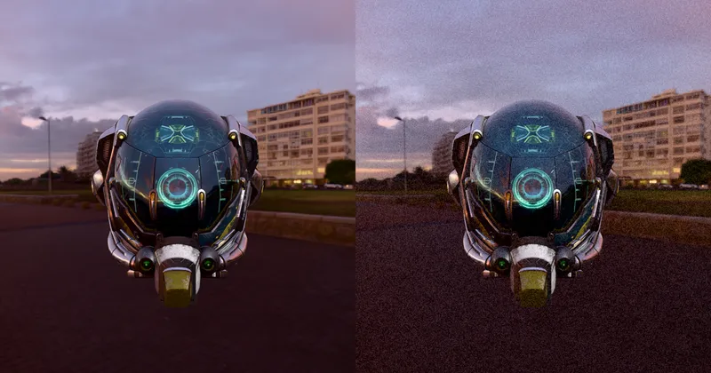

PostEffect > BuiltInEffect > Camera & Lens
Film Grain - RedGPU WebGPU Example
An example demonstrating film grain effects.
필름 그레인 효과를 시연하는 예제입니다.

PostEffect > BuiltInEffect > Camera & Lens
An example demonstrating film grain effects.
필름 그레인 효과를 시연하는 예제입니다.
